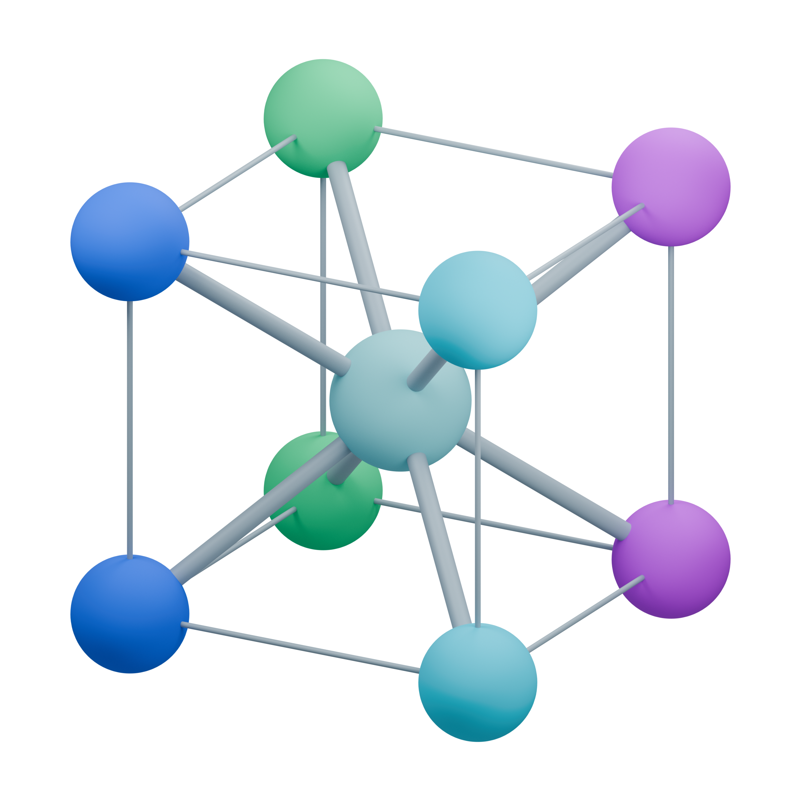

BROWSER-NATIVE MATERIALS VIEWER
See materials
atom by atom
Open an AtomEye CFG, select a local folder to detect numbered CFG sequences, or load a LAMMPS text trajectory. Parsing, analysis, and rendering all stay in this browser.
Orthogonal and restricted triclinic cells supported
BG
Background
Drag to rotate · Shift/right-drag to pan · Scroll to zoom · Click to select
Reading…
timestep —cache 1 / 31 s/frame